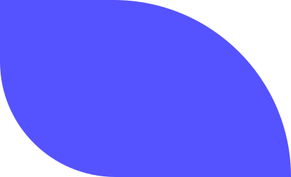
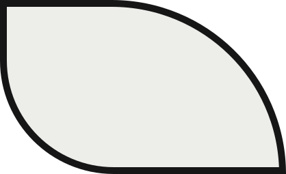
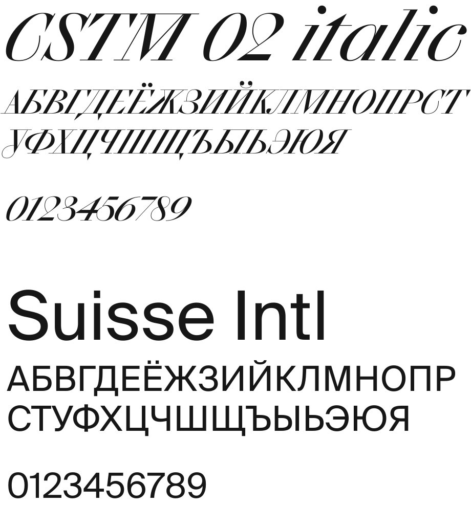
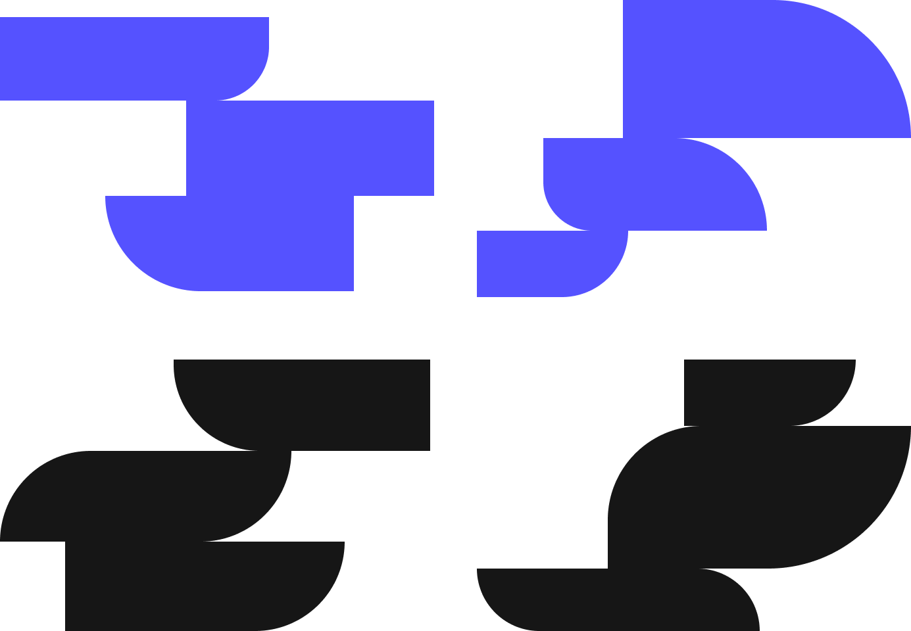
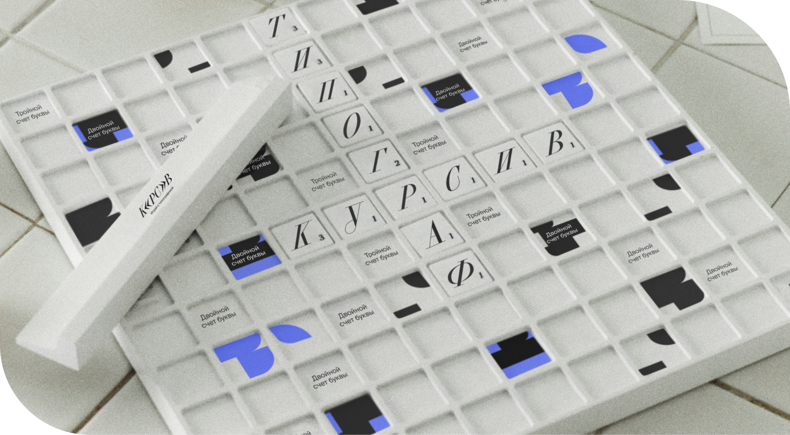
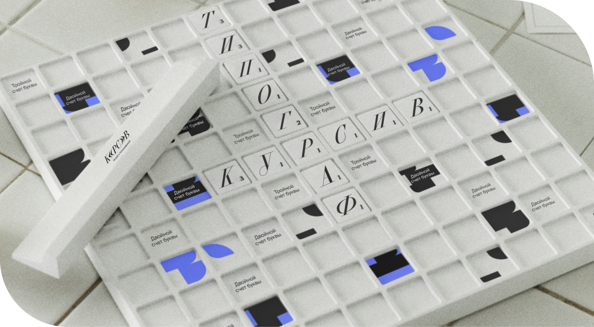
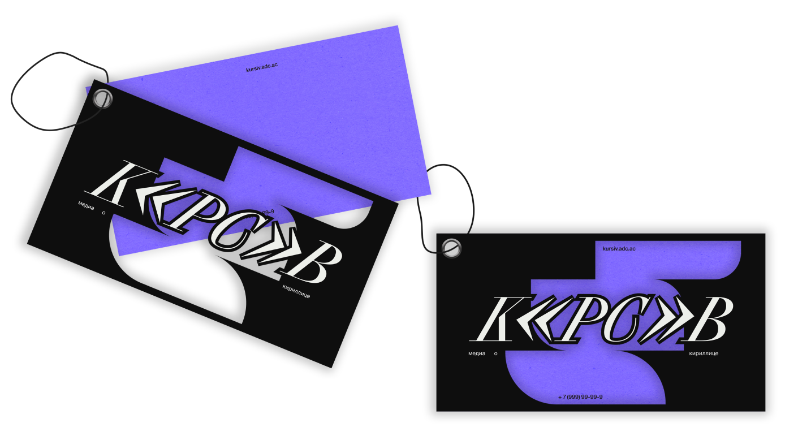
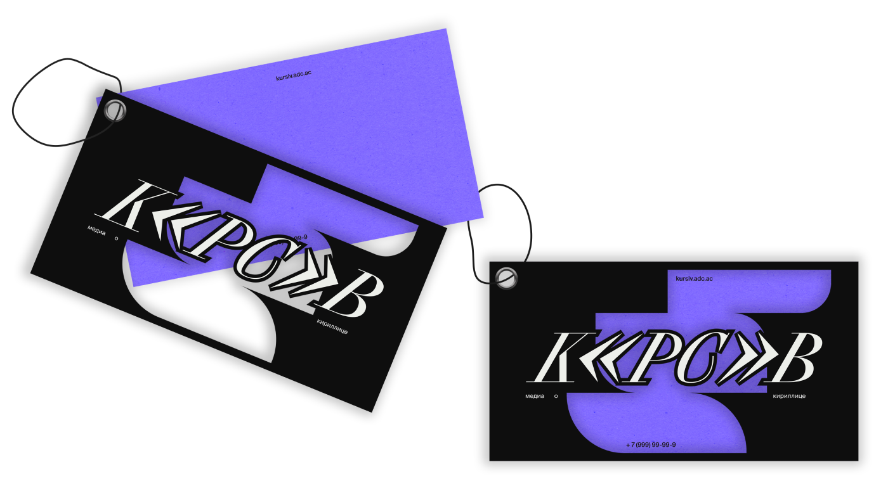

«Курсив» — медиа,
рассказывающее дизайнерам
о типографике и особенностях
шрифтов
рассказывающее дизайнерам
о типографике и особенностях
шрифтов
Ценности
Доступность, применимость,
системность, качество, творчество,
запоминаемость
системность, качество, творчество,
запоминаемость
Миссия
Наполнить окружение красивой
типографикой и сделать так, чтобы весь
кириллический мир состоял из хороших
шрифтов
типографикой и сделать так, чтобы весь
кириллический мир состоял из хороших
шрифтов
Логотип
Логотип состоит из букв,
а также знаков, которые увеличены
до высоты букв. Набран шритфтом
CSTM 02 Italic
а также знаков, которые увеличены
до высоты букв. Набран шритфтом
CSTM 02 Italic

Варианты логотипа
Лого может располагаться
на черном и белом фоне, но не
на растровом изображении
на черном и белом фоне, но не
на растровом изображении
Не допустимо делать
логотип иных цветов, деформировать
или крутить, окрашивать не
в фирменный белый и чёрный
логотип иных цветов, деформировать
или крутить, окрашивать не
в фирменный белый и чёрный

Цвета

#5552FF
#161616

#EDEEEA
Шрифтовая пара
Сетка

Фотографии
Все фотографии переводятся
в режим ЧБ и квадратный формат,
добавляются закругления в 16px, поверх
них не допускается добавлять
типографику, все подписи снизу
в режим ЧБ и квадратный формат,
добавляются закругления в 16px, поверх
них не допускается добавлять
типографику, все подписи снизу

брендинг

журнал

подкаст
Графика
Прямоугольные формы
с закруглёнными краями только
на противоположных сторонах, могут
быть только в фирменном синем или
черном цвете. Обязательно должны
соединяться друг с другом
с закруглёнными краями только
на противоположных сторонах, могут
быть только в фирменном синем или
черном цвете. Обязательно должны
соединяться друг с другом
Носители
 
 
 
